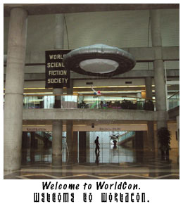
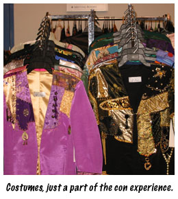
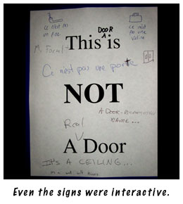
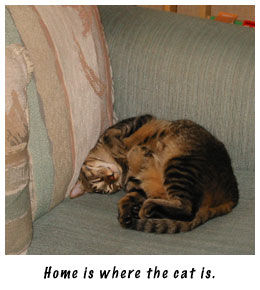

# 87: Another installment of Trials, Triumphs and TrivialitiesSeptember 5, 2002 Dear Friends, That's right, I've been on the road again — this time just 60 miles south in San Jose. It's a lot like Berkeley, except it's hotter and more suburban and more conservative — which explains why I'm living in Berkeley, where Skotos is located, rather than in San Jose, where I grew up. The purpose of my trip southward was WorldCon, or the World Science Fiction Convention, which ran from August 29th to September 3rd, and which I attended for the first three of those days. No more, because I was already thoroughly conned out from GenCon, which I described just a few weeks ago, in Trials, Triumphs & Trivialities #84, Postcard from Milwaukee: Community, Collaboration & Creativity. Still, there's no rest for the weary and the wicked. Or at least not for the wicked. WorldCon is a thoroughly different affair from GenCon, and the culture of science-fiction fans is thoroughly different from that of gamers, and that got me thinking. (Everything gets me thinking; it's a disease that you catch when you begin to write.) That's all a shorthand way of saying that you get a crappy postcard this week rather than the game design column I'd originally planned about retaining new players. Something I learned long ago was: when you have the urge to write about something, write about it. That's probably the best advice I could ever offer to a game designer about anything. What I Do At ConventionsI realized, as I sat down to write this postcard, that I've never really told you what I do at conventions. Marrachers who saw me at GenCon might tell you, "He runs around like a crazy man." And, I suppose, that's accurate if not specific. In business-speak, I engage in marketing, PR, business development, and even a bit of game design at conferences.  That, I'm sure, sounds like a mouthfull. It underlines a fact that I've discussed before, most recently in Trials, Triumphs & Trivialities #85, If You Build It, They Might Come, Part One: Attention: There's more to building a game than just building a game. At WorldCon I distributed press kits to Locus, Asimov's, Analog, and a number of other magazines and publishers. I talked to authors about building Chat Theatres for the worlds they described in their books. I conversed with SF web site editors about banner exchanges. I talked with a few game designers about writing columns for this articles area. I chatted with people about possible new games for the Skotos site. And, I recorded lots of information for future work: other web sites of interest; other local cons of interest; other projects that might relate to our own. The web is, you see, a very big place, and it's very easy for people to get lost in it. Part of my job is to help people, against all odds, to find Skotos. And then to make sure that Skotos itself is the coolest place possible when they get here, so that they'll stay. If you're an independent game designer, this is all of great relevance. It's the type of thing you'll need to be figuring out to make your game a hit. On the other hand, if you've decided to create a game at Skotos, don't sweat it. Because this is what we do, one part of what we mean when we say we're creating an infrastructure to allow your game to thrive. I should note that at this particular con I got a free bonus. I had the opportunity to listen to and participate in many interesting panels (more on them in a bit), and they got my brains going in a million different ways and as a result I have new articles planned on the subtext of horror, the archetypes of horror, the appeal of fantasy, the definition of publishing, and more (there's that writer's disease again). Different InteractionsGetting back to WorldCon itself, I noted a few paragraphs back in this strangely long postcard that it was a very different beast from GenCon. And, it was. Sure, both cons had lots of intelligent people and tons of beautiful (and sexy) costumes. But the SF fandom community is a lot different than the tabletop RPG community, partially because of its age (60 years versus 30), but also partly because of its emphasis. And this is of note to us as game designers because the online games that we're trying to create lie somewhere between the twain.  WorldCon can be a weird experience. You get in the line for your badge behind Gregory Benford, who's Nebula-award winning book Timescape you eagerly devoured a year or two ago; then you note Chelsea Quinn Yarboro in passing, who's vampire books have been on your shelf for perhaps a decade, sadly unread, ever since you had your brief and torid fling with Anne Rice; and then your literary hero of heroes, Gene Wolfe, sits down just a few rows in front of you at a panel. And the panels — oh, the panels. The schedule is just filled with them, perhaps a dozen every hour and a half. Two or five authors, publishers, designers, or fans sit at the front of a room and talk for ten or thirty minutes about a particular topic. And then the questions begin to come in from the floor. And the participants aren't afraid to challenge the panelists, offering up their own views in opposition to Kevin J. Anderson or Tad Williams... or whomever. And then, every night, WorldCon descends into a chaos of parties at one of the nearby hotels — the Fairmount this time around. At the Baen Books' Bar party, for example, I got to down a nasty alcoholic shot called "Rocket Fuel" (and, I assure you, it tasted like its name) and then exchanged a few words with another of my favorite authors, Lois McMaster Bujold. The long-winded point being: there's a different level of interactivity at a SF fandom convention. Authors and fans interact at a level approaching parity. The hierarchical structure between producer and consumer is, though not entirely absent, at least largely submerged. (The comparison, looking at GenCon, is fairly clear. At the gaming convention, producers tend to congregate in the dealer's room, interacting only with each other at parity and with fans in a merchant-consumer relationshop.) In addition, the enthusiasm for social interaction is much higher at WorldCon. These are people who have come together as a group because they want to socialize and interact, to take their existing solitaire activity and make it something larger than it is. Parties, casual conversations, intense panels, and playful flirting all attest to this. Everything was interactive.  (And again, the comparison to GenCon is clear; GenCon is a convention where people are coming together primarily to game. Socializing is only a byproduct of gaming, not an end in-and-of-itself.) Now, if you've read this far, and if you also read my postcard of three weeks ago, you'll probably note that my descriptions of the GenCon Castle Marrach gathering lay somewhat nearer to what I saw at WorldCon last weekend than what I saw at the rest of GenCon near the start of August. In creating online games, we are creating games with a much higher level of interactivity among fans than traditional tabletop games. In order to support that interactivity we, as producers of games, need to be able to offer a more equal level of parity. Or: Hang out with your players and let their creativity influence your own. The Problem of ConservatismAt times I felt a little bit uncomfortable at WorldCon. That was mostly me. I've been attending gaming conventions for something like a decade, and thus I'm used to how they work. On the other hand, this was only the second SF fandom convention I'd attended in that time period, and I remember being a bit uncomfortable at the first one too. Still, it was fun, and there was only one thing that truly bugged me. A very scant few of the authors and publishers I talked to put their nose up at the idea of computer games. Like it was beneath them. I've been playing with fiction for about five years now. I've written twenty or thirty stories and gotten one published. I've also worked in game design for ten years and computer game design for three. And in those fields I've had a number of tabletop RPG supplements published and contributed to the design of numerous games. And, you know what? They're both very hard and they both take a tremendous amount of creativity and they both take a ton of work. If I do have a bias between the two (and I actually do), I know that it's purely visceral. That authors that I respect aren't able to see that is... frustrating. Turning this around to us and our field: Don't fall into the trap of thinking the category you design for is better than others. We have plenty of petty little wars even within our field. MUDs versus MUSHes. Graphical games versus text. Fantasy versus science fiction. RPG versus strategy. It's really easy to fall into the mindset of us versus them when you can't see both sides. So, next time you do fall into that trap, think about two categories of things you do like, and how silly inter-bickerings between those categories seems. That's what your mindset looks like to other people. I grit my teeth a little bit here at Skotos when I see the TEC versus Marrach flamewars. Just like I gritted my teeth when I heard those scant few SF folks speak condescendingly of computer games (and, let me underline one last time: scant few; most of the folks were great and open minded as you would have expected from a future-looking community of writers). I grit my teeth at those things, but I also hope that here at Skotos we might be building a consensus of understanding for the future. Because we have games that fit the molds for both MUD and MUSH. RPG and strategy. Fantasy and science-fiction. Text and... well, let's wait and see on the graphical side of things. We offer all those categories, and hopefully we offer understanding too. Sincerely, I had a good time at WorldCon. I think we might have made some contacts that will prove very useful for Skotos and at the same time I got newly enthused about my own fiction writing which I'd largely neglected for the last year and a half. Nonetheless I'm very happy to be home with no more cons on the horizon till next year. Now, it's just back to work and the normal tiring routing of trying to make Skotos successful. Don't forget to kiss the cats, feed the garbage, and take out the kids. Sincerely,
|